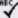
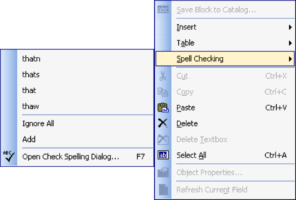
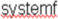
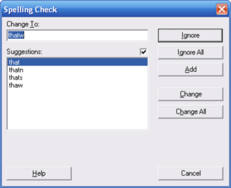

|
Check Spelling (Proposal Maker Tools Menu) |
  
|
Check Spelling (Proposal Maker Tools Menu)
|
Check Spelling (Proposal Maker Tools Menu) |
|
Icon:

. Keyboard Shortcut: Alt, M, KChecks the spelling on the entire document. If a misspelled word is found, opens the Spelling Check dialog, which lets you replace the misspelled word by selecting from a list of suggested words.
Note that the Spelling Check dialog can also be opened from the right click popup menu after right clicking on a misspelled word. In that case the dialog is only used one time, for the current word (spell checking does not resume after the current word).

Immediately after you type in a misspelled word, it will be underlined with a red wavy line, like this:

Note that the underlining is temporary and will go away once the document is redrawn.
Ignore: Ignores the word currently selected on the document, but just this once.
Ignore All: Ignores this instance and every other instance of the selected word for spell checking, as long as the current document is open.
Add: Adds the current word to the custom dictionary. Words you add to the custom dictionary are no longer assumed to be misspelled.
Change: Changes the current word to the word selected in the Suggestions list.
Change All: Changes every instance of the current word to the one selected in the Suggestions list.
Help: Displays this help topic.
Cancel: Cancels the spell checking on the document.